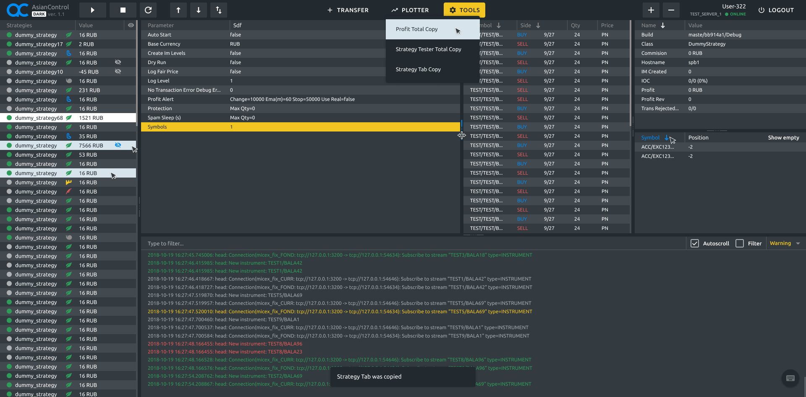
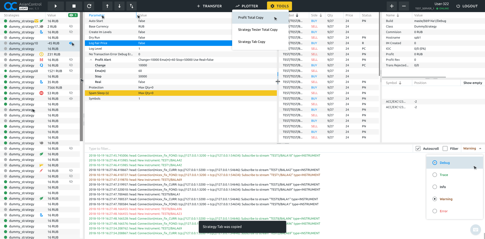
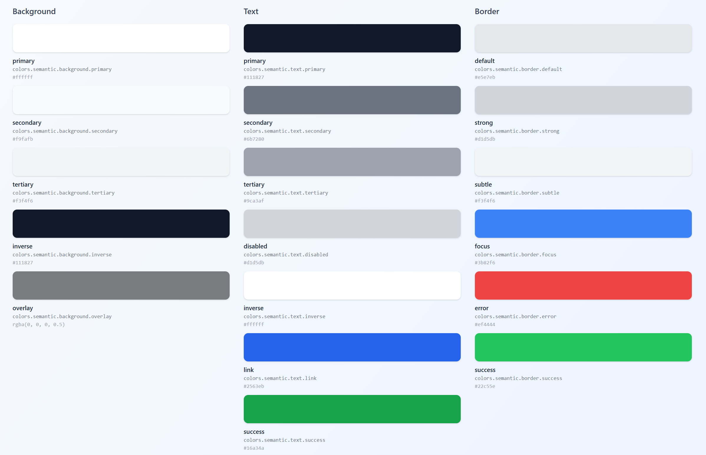
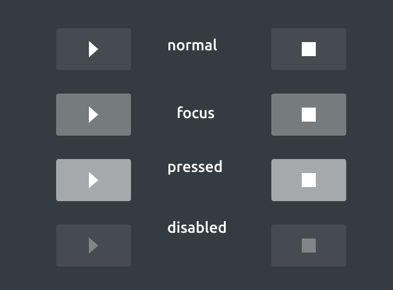
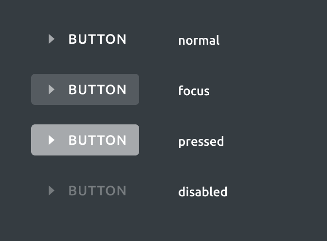
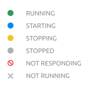
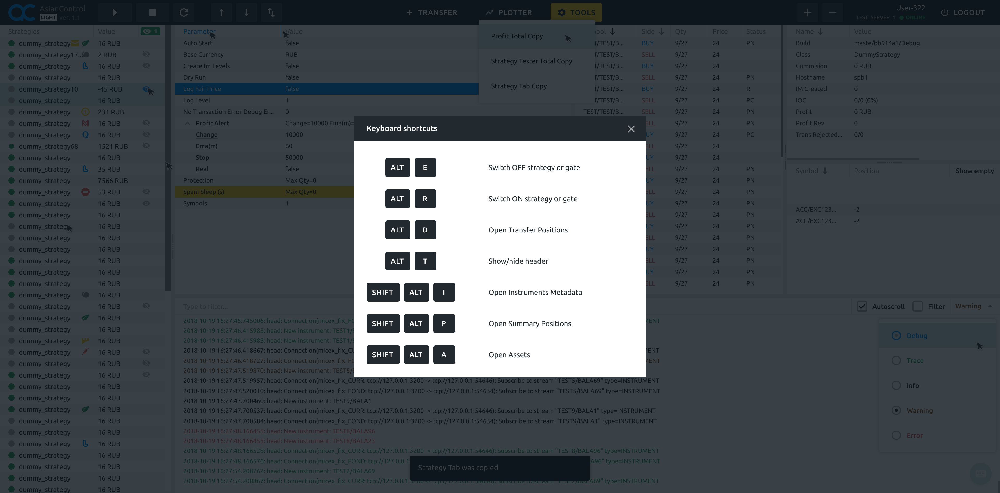
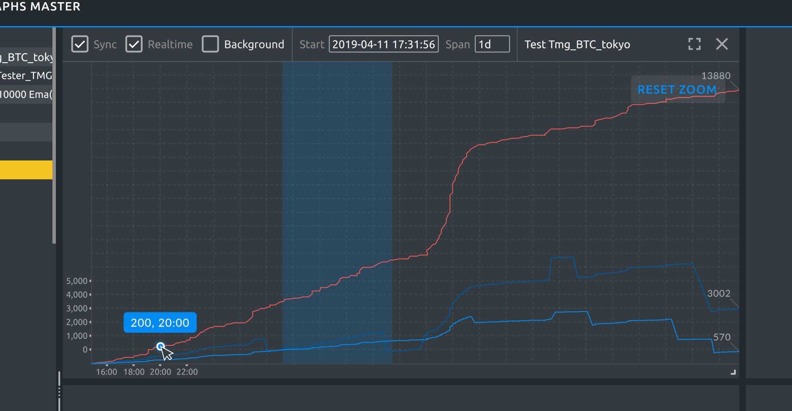
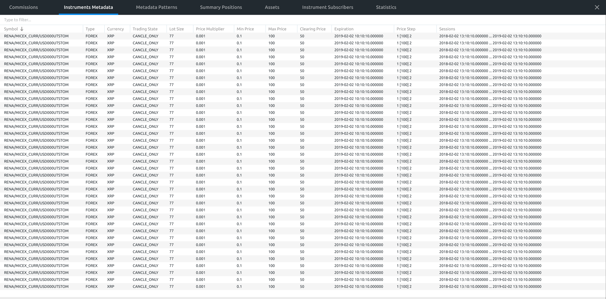

AsianControl
Небольшой инструмент для трейдинга. Суммарно задача от задачи до реализации в проде заняла 2 недели в уже далеком 2018 году.


Проблема
- Нужен внутренний инструмент для трейдеров
Цель
- Сделать быстрый и качественный интерфейс.
- Быстрая скорость работы.
- Кастомизация под разные viewport.
- Максимально эффективное использование пространства под табличные данные.
Процесс

Тут все было по экспресс-схеме. Быстро накидал гайдлайны и приступил к сборке основных экранов.



Пользователи были вовлечены в процесс работы над макетами и сразу положительно отреагировали на идею горячих клавиш и контекстных подсказок.


Вывод графиков с большим количеством настроек и быстрыми фильтрами. Также была сделана полноэкранная версия.

Результаты
2 недели
От идеи до финальных макетов
100% удовольствие
Один из моих любимых проектов, тк удалось поработать с крутыми ребятами :)